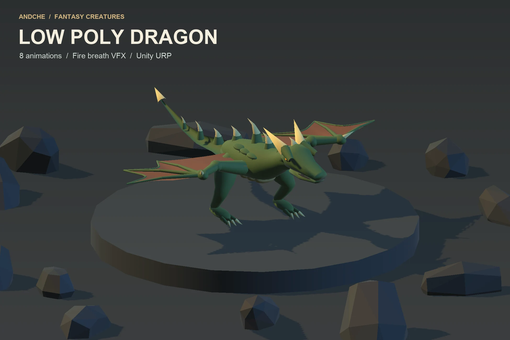
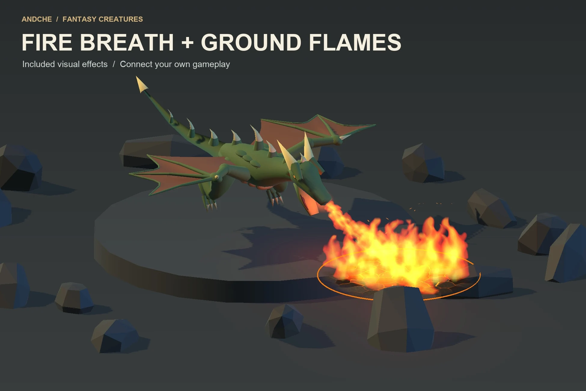
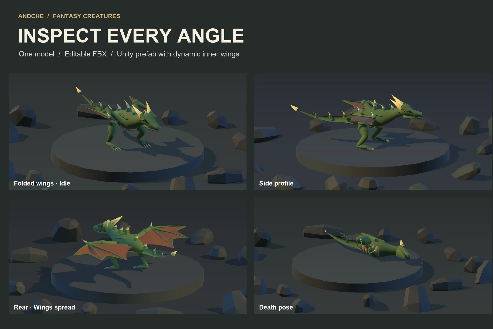
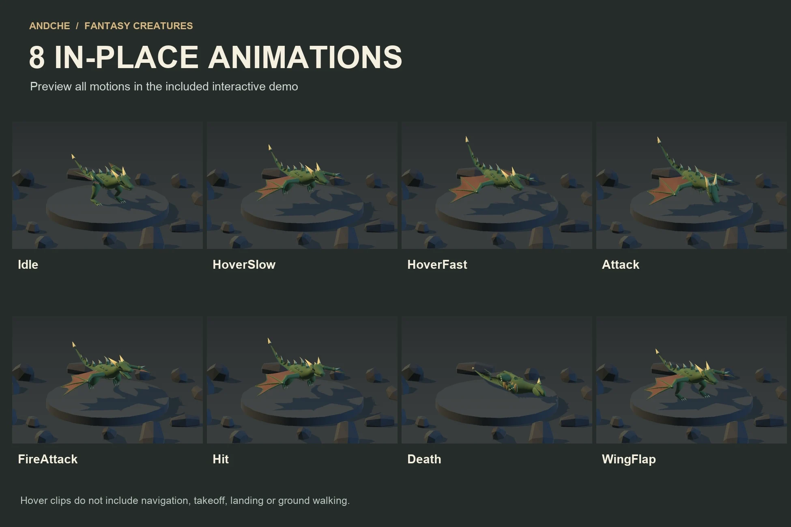
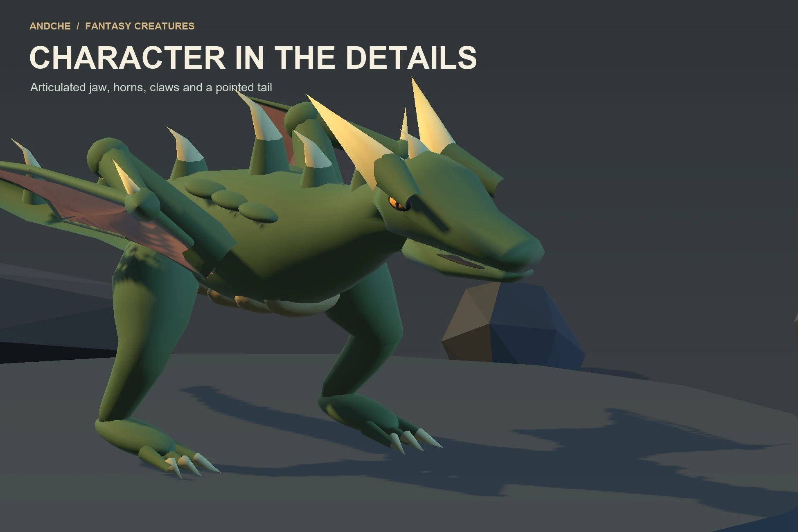

Animated fantasy creature / Unity URP
Low Poly Dragon
A fire-breathing creature for your next fantasy encounter. Moss-green scales, red wing membranes, ivory horns and a pointed tail give this wing-armed dragon a readable silhouette.
Submitted for Asset Store review · $14.99 USD planned price
Submitted to Unity Asset Store on 29 October 2026. Not available to purchase yet; no release date is confirmed.

See the dragon in motion.
Actual Unity captures. Idle, HoverSlow, HoverFast, Attack, FireAttack, Hit, Death and WingFlap, followed by the visual fire effect. Silent; repeated clips are shown at their original speed.
What is included?
- One rigged green dragon with red wing membranes
- Eight in-place animation clips and an editable Animator controller
- Editable FBX model with a 19-bone Generic rig
- Ready-to-use Unity prefab and playback helper
- Visual fire breath, ground flames, embers and point lights
- Interactive URP demo with animation buttons and orbit camera
- Shader and script source plus English offline documentation
Built for your own gameplay.
Preview the animation states, trigger a fire effect at a chosen ground point, then connect the visual asset to your own movement, AI and combat systems.
This dragon uses wyvern anatomy: two hind legs and two wing arms. HoverSlow and HoverFast are hovering motions, not ground-walk cycles. All clips are in-place.
The included effects are visual only and do not apply damage.
A closer look.








Technical details
9,309 triangles in the main FBX mesh, plus 128 in the dynamic inner wing surface: 9,437 total. 6,671 imported main-mesh vertex entries, 19 bones and six dragon material slots. Solid-color materials use a compact 8 × 8 base-color texture.
Designed for Unity 6000.3.23f1 with URP 17.3.0. Built-in and HDRP materials are not included. Enable HDR, post-processing and Bloom for the glow halo.
Know before you build
The included DragonInnerWing component generates the membrane between the torso and the outer wings in Unity. Keep it on the prefab. This connecting surface is not embedded as an animated surface in the standalone FBX; a DCC-only workflow needs it recreated or baked.
No alternate skins, LODs, audio, root motion, ground walking, takeoff/landing, flight AI, terrain IK, character controller, damage or networking. No platform-specific performance guarantee.
Part of the andche collection.
Pair a new creature encounter with the Dwarven Mine Kit or explore the Goblin Camp & Den Kit. Browse the animated rat family and Green Spider for smaller threats.
Explore all assets Ask about compatibility ↗Updated 29 October 2026. Planned price before taxes; local pricing and availability will be set by Unity Asset Store.